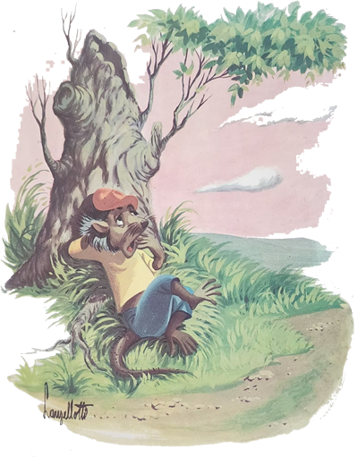
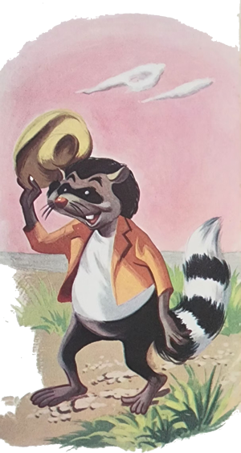
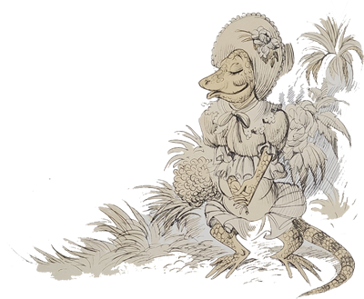
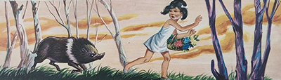
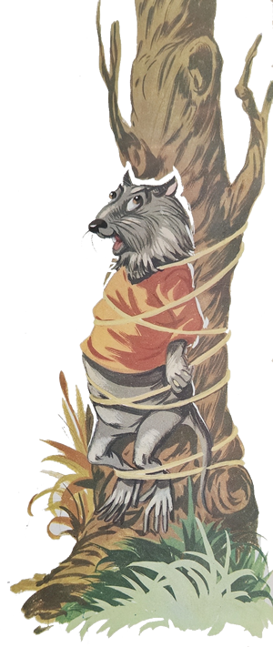

Já estava perto a hora de dormir e um gaúcho terminava de narrar uma estória aos que se encontravam na vasta sala de jantar da estância. O Arrelia e seus companheiros ouviam atentamente o desenrolar da aventura. Foi quando uma gritaria tremenda veio do quintal e interrompeu a estória: ouvia-se o cacarejar apavorado das galinhas, de mistura com o latido dos cães.
- Deve ser algum ladrão de galinhas – disse o Arrelia.
- É um graxaim! – respondeu o gaúcho mais próximo. De veza em quando eles vêm amolar a gente.
Todos os gaúchos que ali estavam saíram atropeladamente. O Arrelia e as crianças também trataram de sair e a porta foi pequena para deixar passar tanta gente quase ao mesmo tempo. Lá fora a confusão foi maior: alguns homens cercaram o galinheiro enquanto outros entraram nele, todos armados de pedaços de lenha. Depois de algum tempo tudo se acalmou. Um dos gaúchos, saindo do galinheiro, disse ao Arrelia:
- Se era ele já não está mais lá. Somente amanhã vai dar para ver se pegou alguma galinha.
O Arrelia e as crianças tornaram a entrar na casa da estância e a sentar-se, mas quase todos os outros continuaram lá fora. As crianças mostravam-se assustadas e curiosas. Tão logo sentaram, Jaci perguntou ao Arrelia:
- Quem é esse tal de graxaim que fez tanta confusão?
- É uma espécie de raposa – esclareceu o Arrelia, brincando com uma xícara que estava sobre a mesa. De vez em quando procura uma estância para saborear uma galinha. Já ouvi muitas estórias sobre ele, quase todas falando de sua esperteza. Tem uma, por exemplo, que conta o que ele fez para se vingar do compadre Gambá. Foi no tempo em que os bichos falavam. O compadre Graxaim andava sofrendo que dava pena. Parecia que tudo estava contra ele. Fazia um inverno rigoroso e os animais e as aves das campinas haviam desaparecido. Só lhe restava assaltar os galinheiros.
tratou pois de por em prática o que pensava. Que surpresa! Nunca vira tantos cachorros em sua vida. Todas as estâncias estavam cheias deles. Será que haviam brotado do chão? Os estanceiros não eram bobos e o Graxaim ficou preocupado. Estava condenado a morrer de fome. Fez uma tentativa e quase foi agarrado pelos cachorros. Para completar, alguns tiros de espingarda passaram perto dele, mostrando-lhe de uma vez por todas que a sua ideia não era praticável.
Depois da corrida ele se enfiou na toca e ficou ali mais morto que vivo de cansaço. Quase que o esforço lhe havia acabado com as últimas energias. Mas ele não desistia facilmente e começou a pensar num modo de abocanhar uma galinha.
Após muito meditar, ele concluiu que a tarefa não era para um sozinho. Ia precisar da ajuda de alguém. Lembrou-se então do Gambá: “O compadre Gambá mora perto daqui. Vou procurá-lo e juntos conseguiremos enganar esses espertalhões.”
Deixou a toda e tomou a direção da casa do compadre Gambá. Eram bons amigos e tudo ia dar certo.
O Graxaim encontrou o compadre dormindo profundamente. Também não estava com boa aparência. Passava fome por certo. Depois de chamá-lo e sacudi-lo uma porção de vezes, conseguiu despertá-lo. O Gambá acordou meio tonto, mal compreendendo o que acontecia:

- Hein? Que foi? Mas não fiz nada! Ah! É você, compadre? O que faz por aqui a estas horas? O que aconteceu?
- Vim falar com você sobre as galinhas – esclareceu o Graxaim, sentando-se. Sei que os tempos estão muito ruins também para você e vim propor-lhe trabalharmos juntos. Os estanceiros estão alertas e é grande o número de cães. Escapei de boa ainda há pouco.
- É verdade – respondeu o Gambá completamente desanimado. E juntos o que podemos fazer?
- Ora, ora. Podemos fazer muito! – procurou animá-lo o Graxaim. O compadre sabe que a união faz a força. O meu plano consiste em sairmos juntos. Quando chegarmos perto do galinheiro, um de nós atrairá a atenção dos guardas e dos cães. O outro, aproveitando a distração deles, entra no galinheiro e pega duas galinhas: uma para cada um. O melhor do plano é que poderemos repeti-lo em vários galinheiros e não passaremos mais fome! Podemos começar agora!
O Gambá deu a impressão de querer animar-se mas logo suspirou e respondeu desconsoladamente:
- Sabe, compadre Graxaim? A sua ideia não seria de se desprezar em outras circunstâncias. Mas agora! Infelizmente não dá.
- E por que não? Pois justamente agora é que ela é necessária! Pois não estamos morrendo de fome?
- Tem razão. Acontece, porém, que ontem passei por um susto, creio que bem mais forte do que o seu, e tão cedo não terei coragem de chegar perto de um galinheiro. Prefiro aguentar-me por aqui até que as coisas melhorem.
- Bem, poderíamos desistir da ideia de atacar um galinheiro e procurar abocanhar um cordeirinho, hein?
O Gambá assustou-se:
- Piorou! Nem me fale! Não tenho forças para tanto! Encontro-me morto de cansaço e os carneiros estão sendo mais guardados do que nunca! Sinto muito, compadre, mas prefiro morrer de fome. Não quero terminar meus dias a tiros ou na boca de algum cão!
O Graxaim insistiu, falou, explicou mas o Gambá não queria arriscar-se mesmo. Que tivesse paciência. Noutra ocasião sim. O outro ficou tão nervoso com o Gambá que acabaram discutindo:
- Ainda bem, compadre, que descobri a tempo – disse o Graxaim levantando-se. Não quero mais sair junto com você, não. O que diria quem me visse, a mim, um bicho de respeito, andando com um covarde como você? Um comodista que prefere passar fome a ter de lutar?
O Graxaim saiu pisando firme, resmungando, xingando, e foi embora.

No dia seguinte, ele procurou o compadre Lagarto. Este não aparentava estar com muita fome e o Graxaim espantou-se. Interrogado, o outro respondeu-lhe:
- Vou me arranjando como posso. Sempre se consegue um pouco de mel.
O Graxaim fez-lhe a mesma proposta mas o Lagarto também tirou o corpo fora:
- Não, compadre. Não gosto disso. Você, porém, é meu amigo e vou fazer de tudo para conseguir-lhe um pouco de mel. Sempre ajuda.
O Graxaim consultou seu estômago e resolveu aceitar o convite:
- Está bem, compadre Lagarto. Aceito e agradeço o seu oferecimento. Pode entregar-me o mel.
- Infelizmente não tenho nenhum aqui. Precisamos ir procura-lo.
Saíram os dois pelas campinas afora à procura de um cortiço de abelhas. A busca não foi pequena e o Graxaim já estava que não podia mais. “Talvez fosse mais fácil agarrar uma galinha!” – pensou ele.
Ia dizer qualquer coisa quando o Lagarto fez sinal para que ele ficasse quieto.
- Que foi? – perguntou apavorado o Graxaim, lembrando-se dos guardas e dos cachorros.
- Fale baixo! – pediu o outro. O compadre Gambá ia passando por aí e não convém que desconfie do que estamos fazendo! Sabe como ele é malandro!
O Graxaim até se arrepiou de raiva. Então o compadre Gambá andava por ali, hein?
Os dois continuaram caminhando e por fim encontraram um belo cortiço de abelhas sobre uma pedra.
- E agora como faremos? – quis saber o Graxaim. Olhe que a ferroada desses bichos não é brincadeira!
- Não se preocupe! – afirmou o Lagarto. Não tenho medo. Fique longe e verá.

O Graxaim mais do que “depreussa” afastou-se, refugiou-se atrás de uma árvore e ficou espreitando o que o outro ia fazer. O Lagarto aproximou-se do cortiço de abelhas e deu-lhe uma violenta “chicotauda” com o rabo. As abelhas saíram assustadas e o Lagarto esperou, imóvel. Quando elas se acalmaram, ele deu outra chicotada. Novo alvoroço. Na terceira vez as abelhas saíram e não voltaram mais. O mel ficou à disposição dos dois amigos.
- Pode vir, compadre Graxaim.
O Graxaim aproximou-se com cuidado.
- Não tenha medo! Elas ficaram assustadas e fugiram. O mel é só nosso!
O Graxaim deu um sorriso de pura satisfação e já ia agarrando o cortiço quando se lembrou: “Onde estão as boas maneiras?” Dirigiu-se ao compadre Lagarto:
- Tenha a bondade, compadre. Primeiro você. Sirva-se.
O Lagarto também era um bicho muito educado e por sua vez queria que o amigo se servisse primeiro:
- Não, compadre. Faço questão que se sirva antes de mim. Primeiro você.
Ficaram naquele “Primeiro você” um tempão. Foi quando levaram um susto, mas um susto . . . Alguma coisa caiu de repente de uma árvore. Era o Gambá. Agarrou o cortiço e fugiu correndo.
Os dois ficaram ali, “espantaudos”. O que havia acontecido? Depois de algum tempo o Lagarto conseguiu falar:
- Viu, compadre? Era o Gambá. Eu não disse que ele era malandro? Lá se foi com o nosso mel!
O Graxaim ficou louco da vida. Jamais havia sentido tanta raiva. Depois que conseguiu acalmar-se um pouco, disse ao Lagarto.
- Vamos atrás dele. Vamos depressa!
Saíram correndo pela mesma trilha que o Gambá tomara.
Depois de uma boa caminhada, viram, por entre o mato, que haviam chagado tarde. O espertalhão tinha engolido todo o mel e estava limpando a boca calmamente.

- Ficamos sem o mel – comentou o Lagarto com um olhar desanimado.
- Não tem dúvida – confirmou o Graxaim. Mas pelo menos resta a vingança. Amanhã ele terá esquecido o que fez e então . . .
No dia seguinte, o Graxaim e o Lagarto saíram. Foram para um mato perto da casa do Gambá. O Graxaim preparou um porrete com um galho bem forte e escondeu-o. Depois pediu ao Lagarto que se ocultasse e começou a arrancar o cipó. Fazia de propósito o maior barulho possível. Pouco a pouco formou um grande monte de cipós.
O Gambá ouviu o barulho e ficou curioso. Foi-se aproximando do lugar. Deu com o Graxaim atarefado em arrancar cipó e com o monte que ele havia feito. Como o Graxaim previra, o Gambá já esquecera sua façanha do dia anterior. Era sem-vergonha mesmo.
- Ué, compadre Graxaim. Para que tanto cipó? Isso daí é suficiente para amarrar uma boiada!
O outro fez que não ouviu e continuou o seu trabalho. O Gambá chegou mais perto:
- Não ouviu, compadre? Perguntei para que tanto cipó! Dá para amarrar uma boiada!
O Graxaim se fez de espantado:
- Ah! É você, compadre? Bons ventos o trazem. Teve sorte. Pelo jeito não ouviu a notícia.
- Que notícia? – quis saber, alarmando-se.
- Pois vem aí um vento como jamais houve.
- Não diga!
- Foi o compadre Urubu que me contou. Ele chegou ontem da serra e disse que por lá o vento já fez enormes estragos. Os bichos foram levados pelo espaço como se fossem penas.
- Não diga!
- O Urubu me disse que a nossa única salvação é nos amarrarmos muito bem amarrados nas árvores. Quem não o fizer não escapará.

O Gambá começou a tremer de medo. Em seu esconderijo, o Lagarto entortava-se de tanto rir. O Graxaim continuou:
- Mas justamente para salvar os meus parentes e a mim é que estou cortando cipó. Vou amarrá-los e a mim também em árvores a fim de evitar que sejamos carregados pelo vento. Bem, ele deve estar perto e não há tempo a perder. Deixe-me levar esse cipó.
Apanhou o monte de cipós e foi-se afastando:
- Adeus, compadre. Trate de amarrar-se ou não sei se o verei mais.
- Espere aí – gritou o Gambá. O que será de mim? Por favor, compadre! Amarre-me bem forte a uma árvore! Jamais esquecerei tão grande favor.
O Graxaim disse que não podia, que estava com pressa e mais não sei o que. Depois disse que diante da insistência do Gambá ia fazer-lhe a vontade. Mas somente porque eram amigos. O Gambá deixou-se amarrar a uma grossa árvore. Tanto foi enleado que parecia um novelo. Aí o Graxaim trouxe o porrete. O Gambá ficou assustado:
O que é isso, compadre? O que foi que fiz? Não me lembro de nada!
- Pois vai lembrar-se sentindo a doçura deste porrete – respondeu o Graxaim começando a bater no Gambá.
O Lagarto aproximou-se e de vez em quando dava uma chicotada com o rabo.
- Ainda não se lembra, compadre? – perguntou-lhe o Graxaim.
- Já sei! Já sei! – gritou o Gambá. Foi por causa do mel que roubei!
- Isso, compadre! – exclamou o Graxaim. É para aprender a não ser esperto para com os amigos!
O Gambá foi solto e saiu gemendo, cambaleando.
- Diga, compadre! – pediu o Graxaim. O mel estava doce?
O Gambá olhou de lado e sem parar respondeu:
- Doce? Foi o mel mais amargo que já provei!
